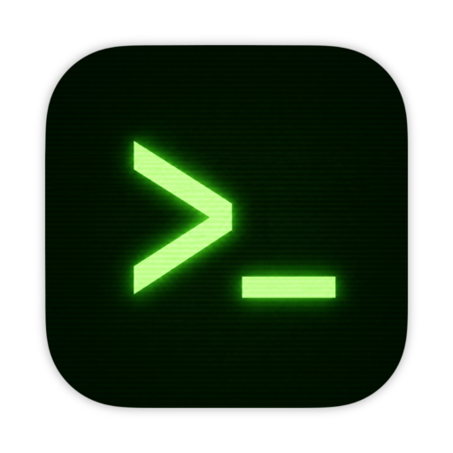

TERM MASTER
A terminal emulator drawn as if it were on a cathode ray tube. Real shell, real pty — the picture is the only thing that is from 1983.
$ term-master --effects
EFFECTS
The terminal itself is SwiftTerm — no escape sequence is parsed twice. Its output is captured into a Metal texture, and a chain of four fragment shaders turns it into a picture tube.
- barrel distortion · scanlines · aperture, shadow and slot mask
- phosphor persistence · bloom · chromatic aberration
- vignette · flicker · vertical roll · static and line noise
- colour grade
Every parameter is adjustable while the terminal is running, in Settings (⌘,) under Screen: the preset and the six worth reaching for up front, the other thirty behind All parameters.
The presets below are wired to this page too — pick one and the site changes tube.
| Preset | What it is |
|---|---|
| Plain | Every effect neutralised bar the saturation. The terminal with nothing done to it |
| Modern Green P1 | Green phosphor on a flat screen. No curvature, no aberration — the default |
| Modern Amber | The same look in amber |
| Green P1 | The full tube: a slight bend, scanlines, aperture grille, phosphor glow |
| Amber | The full tube, amber phosphor |
| Colour | No phosphor tint, shadow mask, real ANSI colours |
Whatever you tune is kept, parameter by parameter, so a value you never touched follows the preset rather than being frozen where it happened to be.
$ term-master --tabs
TABS & PANES
The tab list runs down the left-hand side, inside the picture rather than beside it, so it curves and glows with the text. A tab holds one to three terminals side by side, each with its own session, scrollback and working directory. Background tabs keep running.
| Splitting | Up to three panes. A split that would leave them too narrow to read is refused rather than performed badly, and splitting takes no height from the terminal |
|---|---|
| Pinned tabs | ⌘S pins how many panes a tab has and where each of them is. It opens that way on every launch, and ⌘L puts it back any time |
| Coming back | Open tabs return with their panes, directories and names. A directory that has gone takes the nearest parent that still exists, and says so on the first line |
| Questions | You are asked only when something is about to be lost — a shell with a program running in it, or a pinned tab. An idle prompt is not worth a question |
| Scrollback | 10,000 lines per pane, adjustable. Lines are allocated as output arrives, so a high limit costs nothing until you use it |
| iCloud | Two independent switches: sync the open tabs, sync the screen tuning. Both off by default, both plain readable files — never any terminal output |
| Window | No system title bar. [ CLOSE ] [ MIN ] [ ZOOM ] [ FULL ] are drawn into the same texture as the text, so they curve and scan with it |
| Font | LiterationMono Nerd Font ships inside the bundle and is registered for that process only. Nothing is installed on your system |
$ term-master --hotkeys
HOTKEYS
[ HOTKEYS ] in the top right shows the same list without leaving the terminal.
$ curl -O term-master.zip
DOWNLOAD
On macOS 15 and later: open System Settings → Privacy & Security, find the message about Term Master near the bottom and click Open Anyway. On macOS 14: Control-click the app and choose Open. Either way macOS remembers the answer.
| 1 | Download and unzip |
|---|---|
| 2 | Drag Term Master.app into /Applications |
| 3 | Open it. It runs your $SHELL on a real pty — nothing to configure |
The app is not sandboxed, and cannot be: a sandboxed parent hands its sandbox to every shell it launches, and a terminal that cannot reach your files is not a terminal.